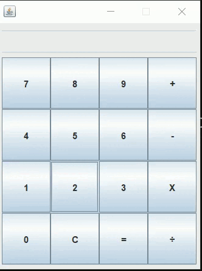
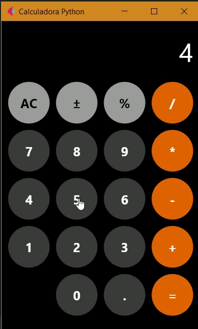
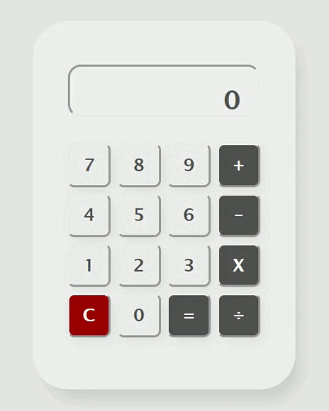

O desenvolvimento da calculadora em Java foi o ponto de partida ideal para este desafio, servindo como uma base sólida para estruturar toda a lógica que seria replicada posteriormente. Por ser uma linguagem com a qual já possuo certa familiaridade e costume, o processo de escrita do código foi mais fluido e intuitivo, especialmente na aplicação de conceitos de orientação a objetos. Para a construção da interface gráfica, utilizei o WindowBuilder, que facilitou e agilizou imensamente processo de design dos componentes visuais dentro do ambiente Swing, permitindo que eu focasse mais na organização das funções matemáticas do que na codificação manual de cada pixel da janela. Embora a interface resultante tenha um aspecto mais robusto e tradicional, a facilidade de depuração e a segurança que o Java oferece tornaram essa uma etapa satisfatória do projeto.


O desenvolvimento em Python foi o ponto de maior dificuldade e onde os erros ficaram mais evidentes. Por não ter familiaridade com a linguagem, a adaptação à sintaxe e à indentação foi um processo de muita tentativa e erro, e o resultado final reflete essa falta de domínio técnico. Utilizei o framework Flet para tentar dar uma cara moderna ao projeto, mas o código ainda carece de refinamento e apresenta algumas falhas de lógica que precisam ser ajustadas. Sei que a aplicação não está otimizada e que cometi erros básicos durante a construção, mas o saldo termina sendo positivo pelo esforço de sair do zero e conseguir entregar um protótipo funcional, mesmo que imperfeito. Foi uma experiência que me mostrou exatamente onde estão as minhas maiores lacunas e o quanto ainda preciso estudar para chegar em um nível de código realmente limpo e profissional nessa linguagem.
O desenvolvimento utilizando HTML, CSS e JavaScript foi, sem dúvida, a melhor parte de todo este desafio. Foi a etapa mais agradável e fluida, onde consegui unir a facilidade de programação do JavaScript com o poder total de estilização que a Web oferece. Diferente das outras linguagens, aqui não houve briga com a interface e eu consegui deixar a calculadora exatamente como imaginava, com um visual moderno, minimalista e ao mesmo tempo confortável. Foi onde obtive o melhor resultado visual de longe. Embora eu saiba que ainda existem ajustes a serem feitos e que o código pode ser sempre otimizado, o sentimento foi de total domínio sobre a ferramenta. Foi o projeto que mais me empolgou, entregando uma experiência de uso muito superior e provando que a Web é, de longe, o ambiente onde me sinto mais produtivo e criativo.
